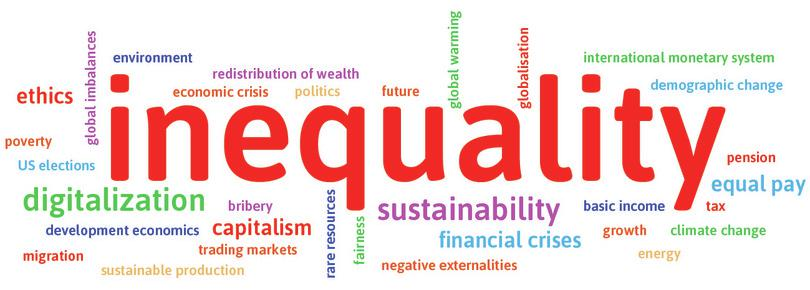

注：本文是John Cassidy介绍CORE项目的文章。
原文：https://www.newyorker.com/news/john-cassidy/a-new-way-to-learn-economics
作者：John Cassidy（纽约时报的全职作家）
随着新学期的开始，这里有一个好消息要告诉即将学习经济学的新生----以及任何想理解各种问题的人，包括不平等、全球化、解决气候变化最有效的方式等问题。一群来自大西洋两岸的经济学家，通过名叫CORE Econ项目，推出了一门关于经济学入门的课程。这是一门现代的、容易理解的并且在网上免费提供的课程。
在这些国家，很多大学会鼓励上Econ 101课程（译注：经济学入门课程）的学生去购买（或者租用）昂贵的教材。这些教材可能要花费近300美金，精装版就更多了。CORE课程包含一本厚厚的电子书《真实的经济世界（The Economy）》、课程幻灯片、以及测试理解程度的练习题。其中的一些资料已经成功地被一些大学所使用，比如像伦敦大学学院和巴黎政治学院。
这个项目作为一个合作成果，出现在2008-2009年世界金融危机和随后的经济大衰退之后，当时有很多学生（以及老师）抱怨当时的教材不能很好的解释所发生的事情。在很多国家，大量学生在期待着经济学教学的改变。这改变包括少强调自由市场主义，多强调真实世界的问题。
传统上，昂贵的导论性教材确实也会包含污染、不平等加剧、泡沫破灭等话题。但是在很多情况下，这些话题通常是出现在那些更传统话题的长长解释之后，这些传统话题包括：供求曲线、消费者偏好、公司理论、交易带来收益、the efficiency properties of atomized（还没想到翻译）、竞争市场。就比如哈佛大学的曼昆(N. Gregory Mankiw)在他著名的《经济学原理（Principles of Economics）》的开头，列举了十个基本原理，包括“理性人在边际上的思考”、“交易使双方都受益”以及“市场通常是进行经济活动的好方式”。
CORE的教学方式并不是全新的。（如果想了解马克思主义政治经济学或者现代货币理论，学生得移步到其他地方去了。）但是这个课程会把完全竞争市场当作特殊情况来看，而不是通常认为的那样。它尝试包含过去四十年来经济学家的早期进步，进而分析更加复杂的情况。比如公司拥有了垄断能力的情况，人有时变得不理性的情况，大量重要信息被私人占有的情况，交易、创新、金融所带来的利益分配极不平衡的情况。CORE课程认为经济史也很重要。
课程中的电子书以讨论不平等开始。同学们首先会了解到的是，在2014年，“90/10”的比值----即（家庭收入）最富有的10%的平均收入与最贫穷的10%的平均收入的比值----在挪威是5.4，在美国是16，在博茨瓦纳是145。之后讨论衡量生活水平的方式以及从工业革命起生活水平呈指数增长的著名折线图。
书中强调技术进步是驱动经济增长最主要的因素。引用耶鲁经济学家William Nordhaus关于电灯发展的有名研究，指出了标准的经济学统计指标，比如国民生产总值（GDP），有时并没有完全考虑技术进步的过程。作为21世纪教程，书中会时不时深入探讨技术创新的原因和结果，这种探讨贯穿整本书，还有专门的章节介绍信息经济。全球化、环境、经济灾难（比如大萧条和全球经济危机）等话题也包含在里面。
由于涉及的内容有一定深度，CORE课程对一些学生来说有挑战性，不过作为纯网上课程也有它的优势。（在英国，也提供了该书的纸质书。）幻灯片包含了很多的图表，并且在某些情况下学生可以下载数据进行分析。练习题是可以进行互动的，幻灯片因为包含已故著名经济学家（比如斯密(Smith)、凯恩斯(Keynes)）的生平以及对在世著名经济学家（比如Thomas Piketty）的视频采访而变得更有趣。
不像大多数教材，CORE课程的电子书由一个大团队编写。超过20位来自大西洋两岸以及印度、哥伦比亚、智利和土耳其的经济学家参与了编写。（他们中的Suresh Naidu和Rajiv Sethi，分别在哥伦比亚大学和巴纳德学院教学。）项目的联合发起人包括来自伦敦大学学院的Wendy Carlin、来自圣菲研究所的Sam Bowles和来自牛津大学的Margaret Stevens。新经济学思想智库（The Institute for New Economic Thinking）提供了一些资金来帮助项目的启动。
CORE团队对经济学不留情面的批判值得获得赞赏。他们制作了一门细致又吸引人的课程，这门课程很可能会吸引更多的年轻人学习经济学，同时也鼓励团队继续进行研究。（在伦敦大学学院，学习CORE课程的学生在之后的经济学课程中表现比之前学习传统课程的学生要好。）
但是CORE课程的资料不仅仅适合即将学习经济学的学生。也适合那些认为自己对经济学很了解的普通读者。（个人亲测：通过仔细阅读一些资料，我认为自己终于理解了马尔萨斯模型以及如何计算银行的杠杆率！）以上介绍，加上完全地免费，绝对值得你去学习。
2014年，Camila Cea给本书的第一个公测版写了前言。那时，她虽然只是一个刚从经济学专业毕业的学生，却已经是一位参加了在智利进行的一个非常成功的抗议运动的老手，该运动主张政府应该提高经济公平。当她和她的来自智利大学的学生追随者发现他们的经济学课程无法解决他们所关注的智利经济问题时，他们被震惊了。他们要求课程进行改变。来自经济学院的Oscar Landerretche院长满足了他们的要求。Camila和Oscar现在都是CORE经济教育组织的主要负责人。
那之后，基于CORE教材的课程分别被伦敦大学学院、巴黎政治学院、图卢兹经济学院、Azim Premji大学、柏林洪堡大学以及其他的来自世界各地的大学作为标准的入门课程采用。在2017年7月，在我们写这篇前言时，有来自89个国家的3000位经济学老师进行了注册，来获取我们额外提供的教学资料。
在CORE项目的开始阶段，Camila对该项目的看法所提到的项目动机一直激励着我们。她写道：
我们想改变经济学教育的方式。学生和老师告诉我们他们对此期待已久。2013年11月英国的金融时报对CROE项目进行的报道引发了关于经济学教和学的网上讨论，导致48小时之内就涌现了1214篇相关的帖子。来自世界各地的学习经济学的学生不停地问，就像我几年前问的：‘为什么经济学学科的内容与我们关于真实世界的经验脱节了？’。
Nataly Grisales，像我一样是一位来自拉丁美洲的经济学学生，最近在自己的博客上关于经济学的学习写到：‘在我选择经济学之前，一位教授提到，通过运用数学工具，经济学可以给我一个描述和预测人类行为的方法。然而，经过几个学期的学习我拥有了许多数学工具，但是所有我想研究的人的行为都从我的视野消失了。’
就像Nataly，我记得问过自己我上的经济学课能否让我解决那些促使我当初优先选择经济学专业的问题。
这也是CORE团队的同事写这本书的原因。它使我再次相信研究经济学可以帮助你理解真实世界的经济问题，以及使你做好准备应对它们。
请加入我们。
Camila和Nataly没能得到经济学的最好的那部分。CORE项目的目标是让学生了解经济学家现在在做什么以及我们知道什么。今天，经济学是一个通过模型让数据变得有意义的实证学科。这些模型可以指导政府、企业和其他很多机构制定政策来解决所面对的问题。
经济学能够提供理解世界的工具、概念和方法，进而解决那些促使像Nataly和Camila这样子的学生选择这门学科的挑战。令人难过的是，这种课程在整个课程中的占比并不大。
在CORE项目进行的这四年中，我们在世界范围类进行了一个课堂实验。我们问学生：‘什么问题是经济学家急需解决的？’下面的文字云展示了Humboldt大学的学生在上第一节经济学课时的回答。词语的大小代表了该词语被提到的次数。

根据Humboldt大学的学生反馈，最需要经济学家解决的问题
根据悉尼和波哥大的学生的回答所得到的文字云几乎和上面的文字云没有区别（你可以在我们的网站www.core-econ.org上看到这些文字云）。更值得注意的是，2016年，我们对伦敦银行的新员工——大部分是刚从经济学毕业的学生——以及新西兰财政储蓄银行的专业经济学家和其他员工进行同样的调查，得到了同样的结果：不平等是他们最关心的问题。
全球性和地方性的社会问题也是新学生所关心的。在法国进行相同调查，结果表明失业是被提到最多的问题。气候变化和环境问题，自动化，和经济动荡也经常被世界各地的人所提及到。
我们对真实世界里的问题的关注，解释了我们为什么要把这本书叫做《真实的经济世界（The Economy）》而不是入门教材的标准叫法《经济学（Economics）》。经济是真实世界里的。经济描述了我们是如何通过生产我们依赖的商品和服务来跟他人和自然环境打交道。相反的，经济学是一种根据事实，概念和模型来理解真实经济的方式。
《真实的经济世界》也是经济学里的一门课程。整个课程，我们都会以一个关于真实经济的提问或者问题开始——比如为什么资本主义的到来跟平均生活水平的迅速提升有关系——然后引入经济学工具来回答这个问题。
对于每一个问题，本书都以同样的顺序进行介绍和分析。我们以一个历史或当前的问题开始，即使它很复杂，然后使用一些模型去认识这个问题。CORE项目的讲解顺序是将传统经济学教材的方式翻转过来。传统上，是模型先提出来。也许模型的引入会包含一些简单的应用，比如购物，然后在课堂的最后去保证模型是可以解决真实世界的经济学问题的。
因为CROE的教材中是以一个历史或当下的大问题开始，因此我们使用的模型和解释需要考虑真实世界里的现象。比如说，做决定者并不知道关于这个决定的所有信息，动机而不是兴趣也很重要，策略性行为的力量也是对我们所看到的结果的一部分解释（这句话翻译有点别扭，有待改进）。
经济学近期的发展给我们提供了这样做的工具。并且因为我们在重要的、复杂的和困难的问题上面应用经济学模型，CORE的学生可以立刻认识到模型化所揭示的本质和模型本身不可避免的缺点。
两个方面可以体现CORE是一个全球化的项目。一是世界各地人参与它的发展，二是它对所有人开放。
我们大部分的设计和交互特性都是在班加罗尔（印度城市）初始化的。展示我们教材和在线资料的开放平台是在开普敦（南非首都）制作的。纸质版书是由牛津大学出版社出版的。我们正在准备将《真实的经济世界》翻译为法语、意大利语、波斯语、西班牙语、印地语、卡纳达语、俄语等其他语言。CORE项目也在为中学开发相关教材。
我们的网上材料使用了CC授权（Creative Commons license，创作共用授权条款），可以在世界范围内进行非商业的无限制使用。本书经过了数百名学者的编写、编辑和检验。书中各单元的主要作者们——他们所有人都免费地贡献自己的专业知识——分别来自13个国家。
我们作为一个知识生产者的团队，承诺《真实的经济世界》免费获取，通过经济学的语言、事实和概念作为粘合剂，建立一个全球的社区。我们想让尽可能多的人能够解释和解决21世纪的经济、社会、生物圈中的问题和挑战。我们希望最好的经济学可以成为人们理解和寻求解决所遇到问题的帮手。
作为一个抽象的跟真实世界无关的学科，当前的经济学在公众、媒体和潜在的学生中有良好的声誉。但在经济学的大多数历史时期，经济学曾经是一个理解和改变世界运行方式的学科，我们想延续这个传统。早期的经济学家——比如16和17世纪的重商主义者或领导法国革命的重农主义者——是影响他们那个时代的大师。经济学出现之前的大师也是如此，比如14世纪的Ibn Khaldun。今天，宏观经济政策制定者，创建这个网上的《真实的经济世界》的私有产权经济学家，经济学发展顾问，智库专家在延续着让真实的世界变成一个更美好世界的承诺。所有经济学家都希望他们的学科能帮助减轻贫穷以及让人们生活的地方变得更加安全。这是这门学科最鼓舞人心的地方，也是最具挑战的地方。
如果你是一名对我们所用的经济学方法感到好奇以及对经济学近期的发展感到鼓舞的学生或者教师，你可以在这本书最后的文章‘CORE项目之后，寻找更多有关经济学的内容’中找到更多的内容。
网上完整版的教材和与牛津大学出版社合作出版的纸质书的推出是我们满意的两个里程碑。但是它们只是开始。CORE不只是一本书或一门课程。它也是一个不停发展的由老师和学生组成的全球性社区，在www.core-econ.org上面，我们欢迎你的好奇心、评论、建议和改进。
就像Camila几年前说的：加入我们！
CORE团队
2017年7月
敬请期待...